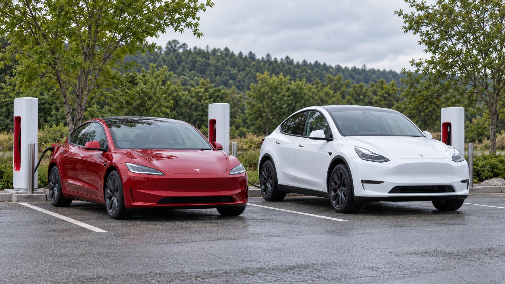

Tesla Returns to Positive Free Cash Flow as Operating Profit Falls 56%
Tesla generated $1.53 billion of free cash flow in Q3, but higher operating expenses weighed on profit as revenue stayed nearly flat.

Tesla returned to positive free cash flow in the third quarter, generating $1.53 billion after a cash outflow in the preceding quarter, according to its shareholder update released Wednesday after the U.S. market close. Operating profit nevertheless fell 56% from a year earlier. The figures give investors two different measures of the electric-vehicle maker’s performance: a recovery in cash generation and continued pressure on the profitability of its operations.
Revenue was $28.05 billion, essentially unchanged from a year earlier. Operating income was $718 million, with an operating margin of 2.6%. A nearly flat sales total therefore did not translate into stable earnings. The distinction matters as investors assess how much of the company’s future investment its existing businesses can support.
Lower sequential investment spending helps cash flow
The update reports $6.26 billion of operating cash flow and $4.73 billion of capital expenditure. Subtracting the latter produces the reported free cash flow. Capital expenditure declined from $5.79 billion in the second quarter, although it remained substantially above the year-earlier level. The sequential cash improvement should consequently be read alongside the timing of investment spending.
Free cash flow measures the money left after investment in long-lived assets. It does not measure the same thing as accounting profit. A business can record expenses before paying cash, receive money before recognizing revenue, or spend heavily on equipment that will be expensed over several years. TTN’s guide to free cash flow explains why those differences matter when evaluating a quarter.
For Tesla, the useful question is whether cash generation can remain positive while planned projects proceed. One quarter of lower spending does not establish a lasting reduction in the cost of expansion. Conversely, a large investment payment does not by itself show that the underlying business has become unprofitable. Both the spending schedule and returns on completed assets deserve attention.
Expenses explain the squeeze on operating profit
Tesla’s operating expenses rose 39% year over year to $4.78 billion. Its total gross margin improved to 19.6%, but that improvement was insufficient to offset the higher expense base. The report illustrates how better economics before operating costs can coexist with weaker profitability after those costs are included.
That relationship is more informative than treating revenue growth as a complete verdict on the business. Investors need to distinguish the contribution from selling products and services from the resources spent developing future offerings and running the organization. Higher spending may support future growth, but the spending itself cannot demonstrate that the anticipated demand or returns will arrive.
Deliveries provide context, rather than the whole answer
Tesla had already disclosed on October 2 that it delivered 486,532 vehicles and deployed 13.7 gigawatt-hours of energy storage during the quarter. Those operational counts were not first announced with Wednesday’s financial results. The company also cautioned in that earlier release that deliveries and storage deployments alone should not be treated as indicators of quarterly financial performance.
A vehicle count does not reveal the average price received, manufacturing cost, currency effect or expense required to support sales. Storage deployment measures physical capacity delivered, rather than revenue or cash collected in the same period. Comparing an operating volume directly with a financial total can therefore hide changes in pricing, product mix and the timing of recognition.
The next test is the durability of the recovery
The financial reading is mixed: Tesla generated cash after capital expenditure, while a higher operating-cost base absorbed a larger share of revenue. The next reports will show whether investment spending rises again and whether operating earnings can recover without depending on a temporary pause in payments. Those are separate questions, and a stronger answer on one does not settle the other.
For shareholders following TSLA, the most useful comparison will combine operating margin, cash from operations and capital expenditure across several quarters. That approach avoids confusing a favorable cash-timing movement with a permanent improvement in earnings power. Wednesday’s update supplies evidence of a cash recovery, but the decline in operating profit keeps the cost of financing Tesla’s ambitions central to the investment debate.
Sources and methodology
Sources checked October 21, 2026. Reported findings and company or regulatory statements are attributed in the text; discussion of financial implications is editorial analysis. The generated cover is illustrative.